| Rural 5-hole family toilet, New York State, USA (no longer in use) | 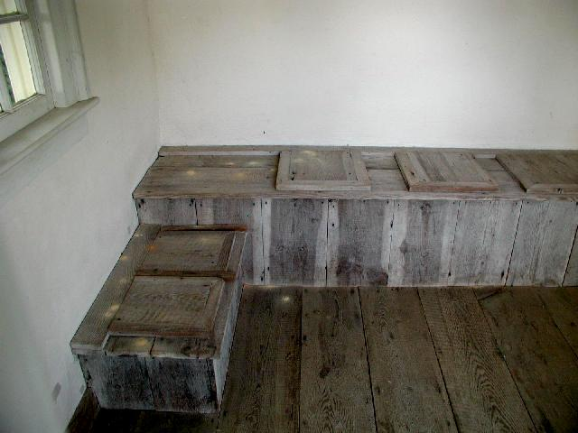 |
| Ancient Roman military latrine (artist's conception based on ruins
at Hadrian's Wall, Housesteads, UK.) |
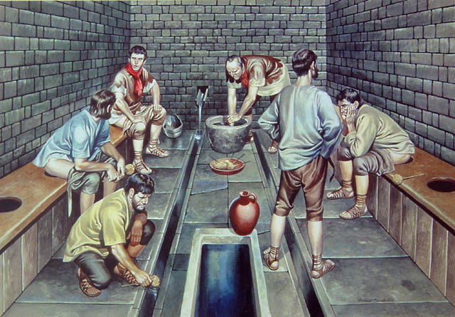 |
| Pit Latrine, The Gambia, West Africa. Cover stone (middle) is replaced after use to keep flies out. |
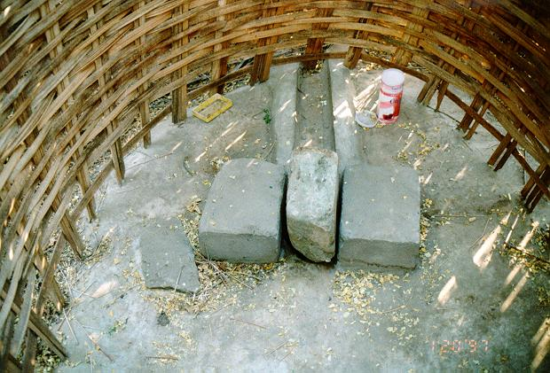 |
| LEFT: Water recycling toilet, Japan. Handwashing water
collects in
tank, then is used to flush the toilet.
RIGHT: Water-saving hotel toilet, Switzerland, with separate buttons for large and small volume flushes |
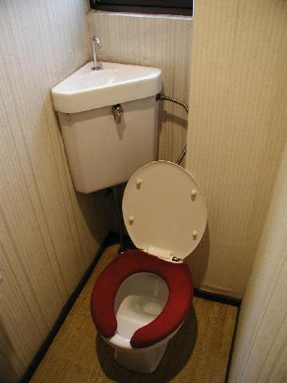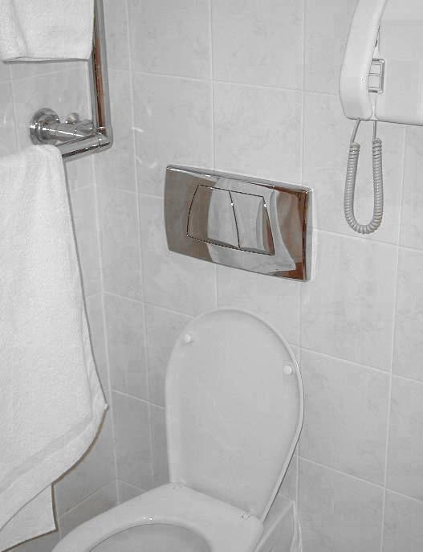 |
| Flushmate (R), California, USA High pressure tank allows effective flushing with a very small volume of water, like the toilets used in many airliners. |
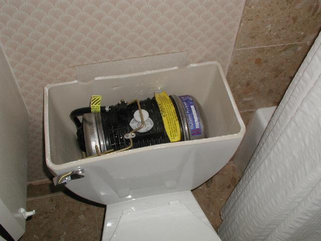 |
| Weighted Mens seat, Palermo airport, returns to Up position when not in use | 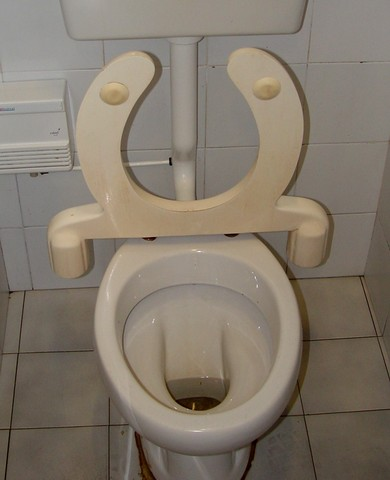 |
| Composting Toilet (Massachusetts, USA) Directions say to add 1 cup of peat moss (in white container at right) after each use, then mix and aerate by turning crank at front 2 complete revolutions. If compost becomes too dry (toilet paper visible) add water. If too wet (compost is muddy or claylike) add more peat moss. | 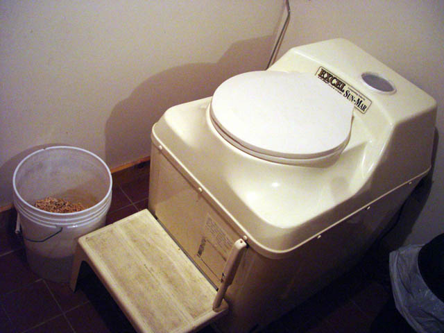 |
| Floor toilet, Elephant Island, India | 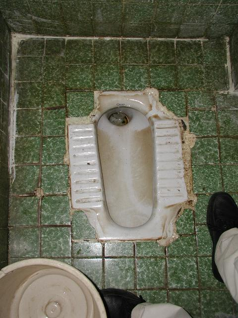 |
| Traditional Japanese Toilet, Tokyo | 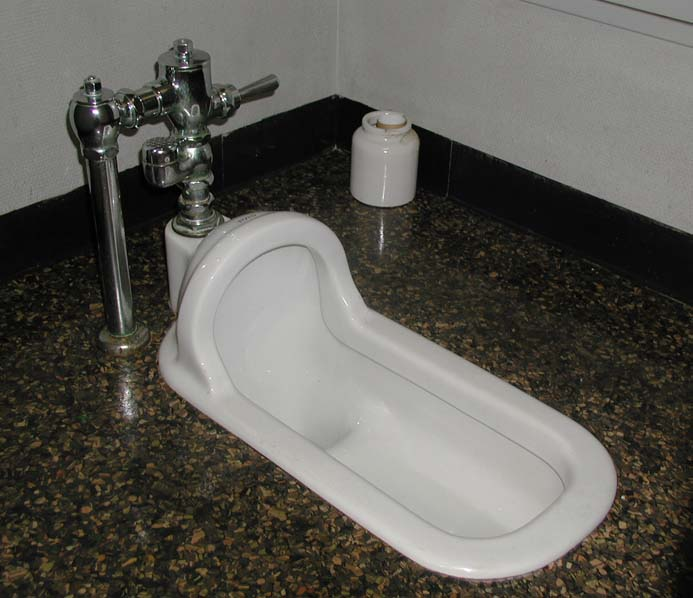 |
| Washlet (R) Japan (instructions) | 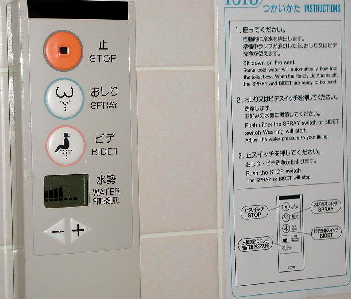 |
| Washlet (R) sprayer in action. | 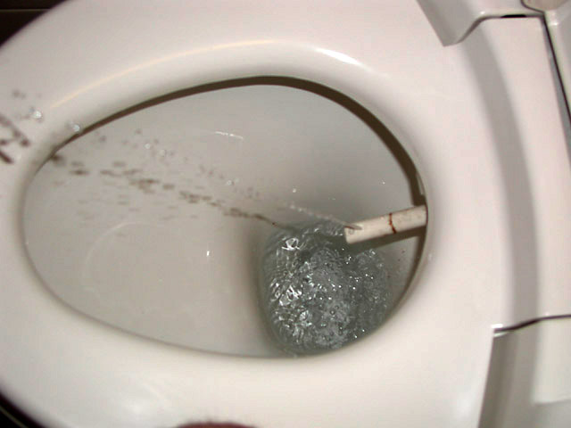 |
| Restrooms at the Newton Institute, Cambridge University, UK are equipped with chalk boards, for mathematicians whose ideas can't wait. | 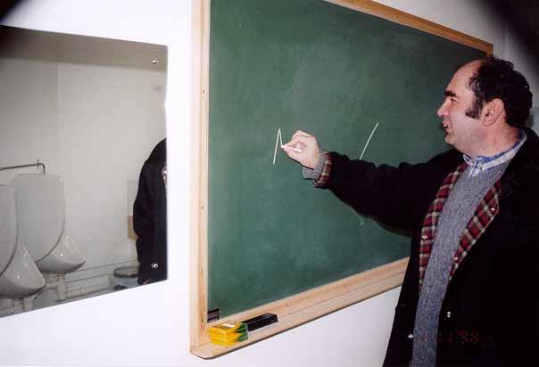 |
| Plumbing fixtures at Student Union Building, Northeastern University (Boston, Massachusetts, USA) are of ordinary appearance but emit peculiar screaming sounds when used. | Screaming Toilet Movie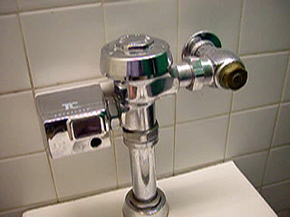 |
Most restroom signs indicate only the gender of the intended visitor without hinting at the nature or importance of the service provided. These signs, posted respectively on the outside and inside of the restroom doors at an Irving gas station in western Massachusetts, USA, are an exception. |
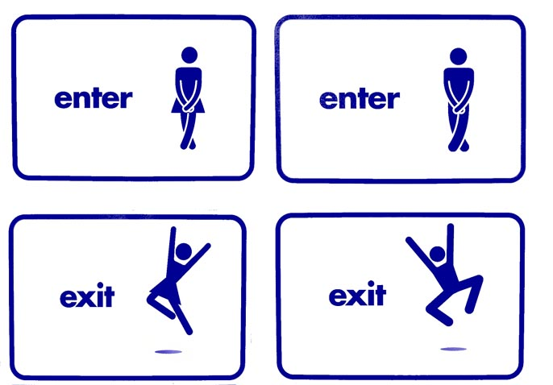 |